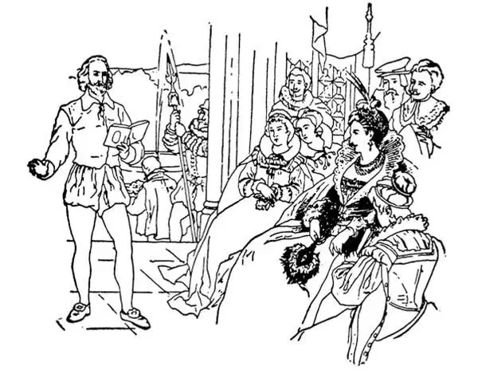

69
The Age of Elizabeth
伊丽莎白时代

THIS story is about the Age of Elizabeth. I'm not going to tell you how old Elizabeth was, though she did live and reign a great many years.
I'm going to tell you some of the things that happened during her long life, for the time when she lived is called the Age of Elizabeth.
There was a young man named Raleigh living when Elizabeth became queen. One day when it was raining and the streets were muddy, Elizabeth was about to cross the street. Raleigh saw her and, to keep her from soiling her shoes, ran forward, took off his beautiful velvet cape, and threw it in the puddle where she was about to step, so that she might cross upon it as upon a carpet. The queen was greatly pleased with this thoughtful and gentlemanly act and she made him a knight, so that he was then called Sir Walter Raleigh, and ever after that he was one of her special friends.
Sir Walter Raleigh was much interested in America. Cabot had claimed a great part of it for England almost a hundred years before, but England had done nothing about it. Raleigh thought something should be done about it; he thought English people should settle there, so that other countries like Spain, which had made so many settlements in America, would not get ahead of England. Raleigh got together several companies of English people and sent them over to an island called Roanoke, which was just off the coast of the present state of North Carolina. At that time, however, almost the whole coast of the United States as far north as Canada was called Virginia. It had been named Virginia in honor of the Virgin Queen Elizabeth.
Some of these Roanoke colonists became discouraged with the hardships they had to suffer and so gave up and sailed back home again. Those who remained all disappeared. Where? No one knows. We think they must either have been killed or have died of starvation. At any rate, not one was left to tell the tale. Among these Roanoke colonists was the first English child born in America—a girl, who had been named Virginia Dare, for the queen was very popular and a great many girls were named Virginia after her.
Some tobacco was brought back from Virginia, and Sir Walter Raleigh learned to smoke. This was such a strange and unknown thing at that time that one day while he was smoking a pipe, a servant who saw smoke coming out of his mouth thought he was on fire and, running for a bucket of water, emptied it over his head.
Virginia is still famous for its tobacco. At first tobacco was supposed to be very healthful, for the Native Americans seemed to have very good health, and they smoked a great deal. Afterward, however, in the next reign, King James so hated tobacco that he wrote a book against it and forbade its use. Now we know that James was right and that tobacco can make people sick with deadly diseases.
After Queen Elizabeth died, Raleigh was put in prison, for it was said he was plotting against the new king, James, who came after Elizabeth. The prison where he was placed was the Tower of London, the old castle that William the Conqueror had built. Here Raleigh was kept for thirteen long years, and to pass the time away he wrote a History of the World . But at last he was put to death as many other great men were also.
During the reign of Queen Elizabeth, there lived the great writer of plays, the greatest writer the world has ever known. This man was William Shakespeare.
Shakespeare's father could not write his name. Shakespeare himself spent only six years at school. As a boy he was rather wild, and he was arrested for hunting deer in the forest of Sir Thomas Lucy at Stratford.

Shakespeare reading to Elizabeth（莎士比亚为伊丽莎白朗诵自己的作品）
When still a boy, Shakespeare married a girl older than himself named Anne Hathaway. After he had been married a few years he left her and their three children, left the little town of Stratford, and went up to the great city of London to seek his fortune. There, Shakespeare got a job working around a theater, holding the horses of those who came to see the plays. Then he got a chance to act in the theater, and he became an actor, but he did not become a very good one.
In those days the theaters had no scenery. A sign was put up to tell what the scene was supposed to be. For instance, instead of forest scenery, they would put up a sign saying, “This is a forest,” or instead of a room scene a sign saying “This is a room in an inn.” There were no actresses. Men and boys took the parts of both men and women.
Shakespeare was asked to change some of the plays that had already been written, so that they could be better acted. He did this very well; then he started in to write plays himself. Usually he took old stories and made them into plays, but he did it so wonderfully well that they are better than any plays that have ever been written before or since.
Though Shakespeare left school when only thirteen years old, he seems to have had a remarkable knowledge of almost everything under the sun. He shows in his plays that he knew about history and law and medicine. Some of the best known of Shakespeare's plays are Hamlet , The Merchant of Venice ,Romeo and Juliet , and Julius Caesar .
Shakespeare made a good deal of money for those times—almost a fortune. Then he left London and went back to live in the little town of Stratford where he was born. Here at last he died and was buried in the village church. People wanted to move his body to a greater and handsomer place, to a famous church in London. But someone, perhaps Shakespeare himself, had written a verse which was carved on his tombstone. The last line of this verse said, “And curst be he who moves my bones”; so they never were moved, for no one dared to move them.
【中文阅读】
这个故事是关于伊丽莎白年代的。我不打算给你讲伊丽莎白活到多大年纪，尽管她确实比较长寿，在位也很多年。
我要给你讲的是她漫长一生中发生的一些重大事情，因为她生活的那个时期现在被称为伊丽莎白时代。
伊丽莎白成为女王时，英国有个年轻人名叫罗利。一天正下着雨，街道泥泞，伊丽莎白正要过马路。罗利看到她，为了不让她弄脏鞋子，罗利赶紧跑上前，脱下自己漂亮的天鹅绒斗篷，把它铺在她即将踩到的水坑里，这样她就可以踩在斗篷上过马路，就像走在地毯上一样。女王对这一体贴周到的绅士行为感到非常满意，于 是封他为骑士，这样他就被称为沃尔特•罗利爵士，从此以后他成了伊丽莎白一个特别亲密的朋友。
沃尔特•罗利爵士对美洲很感兴趣。差不多一百年前，卡伯特曾宣布美洲的一大片土地为英国所有，但是英国对这片土地无所作为。罗利认为应该做点什么；他认为英国人应该在那里定居，这样其他已经在美洲建立了许多殖民地的国家，比如西班牙，就不会超过英国。罗利召集了几批英国人，把他们送到了一个叫做罗厄诺克的岛上，离现在的北卡罗来纳州的海岸不远。不过那时几乎整个美国海岸向北直到加拿大都叫做“弗吉尼亚”。取这个名字是为了纪念“童贞女王”伊丽莎白 ［1］ 。
在罗厄诺克岛上的殖民者，其中有些人因为生活艰难困苦而变得意气消沉，于是不愿再坚持下去，就乘船回国了。留在那里的人后来都失踪了。他们去哪里了呢？没有人知道。我们认为他们要么被杀，要么饿死了。无论怎样，没有一个人留下来讲述这个故事了。在罗厄诺克岛上的这些殖民者中，有第一个出生在美洲的英国孩子——一个女孩，被取名为弗吉尼亚•戴尔。因为女王当时深受爱戴，许多女孩都以她的名字取名为弗吉尼亚。
有人从弗吉尼亚带回了一些烟草，沃尔特•罗利爵士学会了吸烟。这在当时是一件非常奇怪、无人知晓的事情，所以有一天，当他在吸烟斗时，一个仆人看见烟从他的嘴巴里冒出来，还以为他着火了，急忙跑去打了一桶水，浇在了他的头上。
现在弗吉尼亚州仍然以盛产烟草而闻名。最初烟草被认为非常有益健康，因为美洲的土著人看上去非常健康，而且他们吸烟很厉害。不过，后来下一任国王詹姆斯对烟草极为痛恨，还写了一本书反对吸烟，并禁止人们吸烟。如今我们知道詹姆斯是对的，烟草可以让人们患上致命的疾病。
伊丽莎白女王去世之后，罗利被关进监狱，因为据说他正密谋反对伊丽莎白的继任者，新国王詹姆斯。关押罗利的监狱是伦敦塔，就是征服者威廉建造的那座古老的城堡。在那里罗利被关了长达十三年之久，为打发时间，他写了《世界史》。但是最后他还是被处死了，就像许多其他大人物悲惨的结局一样。
伊丽莎白女王统治时期，生活着一位伟大的剧作家，也是迄今为止世界上最伟大的作家。这个人就是威廉•莎士比亚。
莎士比亚的父亲连自己的名字都不会写。莎士比亚本人在学校里也只读了六年书。他小时候相当顽劣，在斯特拉特福他曾到托马斯•卢西爵士的树林里猎鹿而被抓。
莎士比亚还未成年就结婚了，妻子年纪比他大，名叫安妮•哈瑟维。结婚几年后，他离开她和他们的三个孩子，离开小镇斯特拉特福，前往大城市伦敦去寻找发迹的机会。在伦敦一家剧院外面，莎士比亚找到一份工作，替那些来看戏的人照看马。后来他得到一个在剧场里表演的机会，就做了演员，不过他并没有成为一名很优秀的演员。
在那个年代，剧场没有舞台布景。人们举起一块牌子说明是什么场景。例如， 他们举起一块牌子，上面写着“这是森林”，就代替了森林布景，或者牌子上写着“这是酒馆里的一个房间”，就代替了房间布景。男演员既扮演男人的角色，也扮演女人的角色。
有人请求莎士比亚改写一些别人写好的剧本，为的是更适合演出。他干得非常出色；于是他开始自己写剧本。通常他采用古老的故事，把它们改编成剧本，但是他写的剧作太精彩、太感人了，胜过了他之前和之后的任何剧作。
虽然莎士比亚13岁就离开了学校，但是他好像对世界上各种各样的事物都很了解。从他的剧本里可以看出他了解历史、法律和医学。莎士比亚最著名的剧本有《哈姆雷特》、《威尼斯商人》、《罗密欧与朱丽叶》和《尤里乌斯•恺撒》。
在那个时期莎士比亚挣了很多钱——几乎是一大笔财富。然后他离开了伦敦回到他出生的小镇斯特拉特福居住，直到去世，最后安葬在一个乡村教堂里。人们想把他的遗体移到一个更宽阔、更气派的地方，移到伦敦的一座著名的教堂。但是有人，也许是莎士比亚本人，早就写了一首诗，刻在他的墓碑上。这首诗的最后一行是“移我尸骸者，必遭诅咒”；所以他的尸骸未被移走，因为没有人敢这么做。